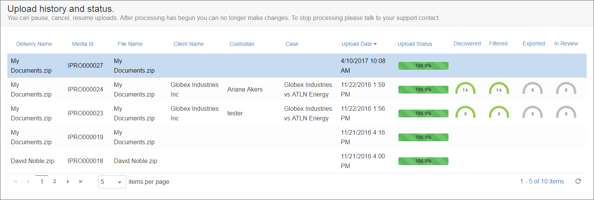
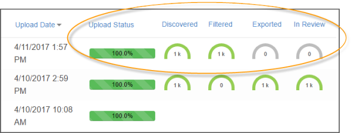
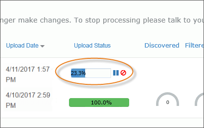
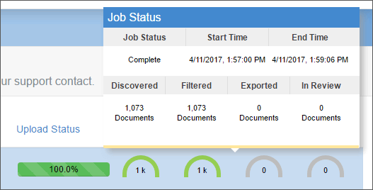

Note: For files being processed
into Review, once processing begins, changes cannot be made. If
you need to stop processing, please contact
The Upload History and Status grid in Self-Service provides a history of your uploads, along with the status of any current uploads. It displays in the lower pane of the Self-Service home page.

The Upload History and Status area allows you to monitor the progress of your upload in real time as data is uploaded, discovered, filtered, exported, and loaded into Review.

After the upload starts, the Percent Complete displays in the progress bar under the Upload Status column.

Hover over a status gauge in the grid to display the Job Status popup for the selected delivery.

The Job Status popup displays the following information:
Job Status – The status of the selected job.
Start Time – The date / time that the upload process began.
End Time – The date / time that the upload process ended.
Discovered – The total number of documents in the delivery that have been discovered.
Filtered – The total number of documents in the delivery that have been filtered.
Exported – The total number of documents in the delivery that have been exported.
In Review – The total number of documents in the delivery that are in Review.
Using the icons next to the Upload Status progress bar, you can cancel, pause, or restart an upload job.
|
TO... |
DO This... |
|
Cancel a job |
Click , then click OK in response to the resulting confirmation message. |
|
Pause a job |
Click . Uploading stops. |
|
Restart a job |
Click . If the initial connection was lost*, the progress bar turns red. In this case: Reselect the file in the Open dialog box and click Open. Click Resume Upload. The upload resumes. |
|
|
Note: For files being processed
into Review, once processing begins, changes cannot be made. If
you need to stop processing, please contact |
The following table details the columns that appear in the Upload History and Status Grid.
|
Columns |
Description |
|
Delivery Name |
The
name of the delivery that was entered in the Delivery
Name field when uploading the data. |
|
Media Id |
A
system-assigned ID. |
|
File Name |
The
name of the file selected when uploading the data. |
|
Client Name |
The client associated
with the case. |
|
Custodian |
The name of the
custodian selected for the delivery in the Select
Custodian field when uploading the data. |
|
Case |
The name of the
case that was selected for the delivery in the Select
Case field when uploading the data. |
|
Upload Date |
The date the
delivery was uploaded. |
|
Upload Status |
The percentage of
the upload that is complete. |
|
Discovered |
A status gauge
that displays the upload progress of discovered items. The
total number of documents in the delivery that have been discovered
are displayed below the gauge, rounded by kilobytes (k). |
|
Filtered |
A status gauge
that displays the upload progress of filtered items. The total
number of documents in the delivery that have been filtered
are displayed below the gauge, rounded by kilobytes (k). |
|
Exported |
A status gauge
that displays the upload progress of exported items. The total
number of documents in the delivery that have been exported
are displayed below the gauge, rounded by kilobytes (k). |
|
In Review |
A status gauge
that displays the upload progress of items in Review. The
total number of items in the delivery that are in Review are
displayed below the gauge, rounded by kilobytes (k). |
You can sort the Upload history and status grid by any column by clicking a column header.
Click the Go to the Next buttons and Go to the Previous buttons to navigate through the grid. You can also set the number of items to view per page.
Refresh the grid by clicking the Refresh button.
Related Topics